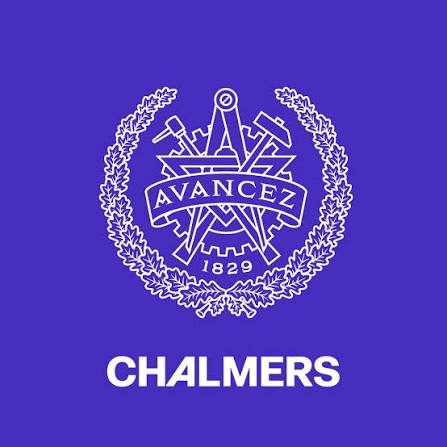

Working hours
Spot recurring overtime concerns that need investigation.
TEK830 · IKEA Challenge 4 · Vietnam
Clock It gives workers an optional way to share how a shift went, and gives IKEA a clearer signal about where to follow up.
Course prototype · Worker voice and responsible follow-up
Project video
A voice-over walkthrough of the worker kiosk and the manager dashboard. It shows what a worker sees at clock-out, and what Maria sees afterwards. English captions are on by default.
0:00 Introduction
This is Clock It, our prototype for IKEA's challenge on a fair and just transition across the value chain, focused on supplier factories in Vietnam.
0:13 The challenge
Problems like excessive overtime, unsafe conditions or delayed wages can build up between audits. Workers are the first to know, but raising concerns through management is hard. So our idea is simple: ask workers directly, at a moment they already go through every day.
0:34 Clocking out
At the end of a shift, the worker clocks out on the factory's existing fingerprint scanner. Right next to it, a small tablet asks one optional question: how was your shift today? The answer is never linked to the fingerprint.
0:51 A good shift
If the shift went well, it takes one tap. The answer is saved, and the worker can head home.
1:02 Flagging a concern
If the shift was okay or difficult, a few short yes-or-no questions appear: overtime, safety, pay, fair treatment, and anything else. Here, our worker flags too much overtime and adds a short note. Every question can be left blank, and the screen reminds workers not to include names. Large buttons and plain language keep it to about a minute. Then one tap to submit.
1:33 Skipping
And anyone who doesn't want to answer can simply skip. Nothing is saved.
1:42 Meet Maria
On IKEA's side, our primary user is Maria, the Sustainability and Compliance Manager for Vietnam.
1:53 Manager dashboard: overview
Her dashboard brings the feedback together: how many responses came in, the participation rate, open signals, and how quickly cases get a first review.
2:06 Manager dashboard: trends
She can follow how shift ratings change week by week. Since ratings only reflect those who chose to answer, the dashboard reminds her to read them with care.
2:21 Manager dashboard: worker signals
Concerns are grouped into categories, so she can filter by working hours or safety and see which issues keep coming back.
2:32 Manager dashboard: follow-up
Recurring patterns become cases in a follow-up queue. Opening a case shows the next steps: check the pattern with worker-informed context, choose a safe way to respond, and record whether the action actually helped.
2:51 What is real, and what is next
To be clear about what's real: the worker flow works today and stores answers only in the browser, while the dashboard shows example data. Next, we want a Vietnamese version with audio guidance and a small pilot in one or two factories. Clock It: giving workers a voice, and IKEA earlier signals to act on.
Presentation
The 16 presentation slides. The PowerPoint file also includes speaker notes.
Download the slides (PDF) Download the slides (PPTX, with speaker notes)
The challenge
Workers can face long hours, safety concerns, delayed wages or unfair treatment. They need a safer way to raise concerns; teams need a clearer signal about where to follow up.
Spot recurring overtime concerns that need investigation.
Hear about safety issues closer to when they happen.
Surface concerns about pay, harassment or treatment.
A small moment, a better signal
The concept adds a short feedback moment beside existing clock-out equipment. Participation is designed to be optional.
Clock out as usual. Feedback stays separate from identity checks.
Rate the shift and choose a concern category if you want to.
A compliance manager reviews patterns and tracks follow-up.
The prototype
Try the worker flow, then explore the manager overview.
How was your shift?
Optional · Skip any time
Large touch targets and a short path to share a concern or leave without responding.
Open worker kioskReview patterns, open a case and consider responsible follow-up.
Open manager dashboardDesign thinking
How Clock It addresses worker needs, integrates with factory equipment, and supports IKEA's social sustainability goals.
Our primary user is Maria, the Sustainability and Compliance Manager responsible for Vietnam, who needs unified digital access to worker feedback across supplier sites to spot patterns missed by scheduled audits. Secondary users include factory workers at supplier and subcontractor sites, IKEA purchasing teams, and supplier managers.
Research through open-ended interviews with contacts in Vietnam, surveys, and public worker discussions highlighted fear of retaliation and language and literacy barriers. Clock It addresses this through voluntary participation at clock-out, a minimal UI with rating faces, simple Vietnamese text, large touch targets, audio guidance, and a support hotline.
The current prototype uses HTML, CSS, and JavaScript. Because existing factory fingerprint scanners cannot run modern interactive software, the full concept uses low-cost, refurbished, locked-down companion tablets installed beside fingerprint terminals at factory exits.
The system pairs anonymized clock-in and clock-out logs (to verify working hours without storing biometric fingerprint data) with optional touchscreen reports sent to secure cloud storage through standardized APIs. To protect privacy and prevent tampering, independent partners handle installation, suppliers are restricted from accessing raw data, and cases cannot be deleted to hide metrics. A pilot in one or two factories in Vietnam with local labor experts will validate legal and operational requirements.
Clock It extends IKEA's vision of "creating a better everyday life for the many people" to supply chain workers while reinforcing values of caring for people, taking responsibility, and continuous improvement. It complements top-down audits with continuous bottom-up insight.
Compliance managers review aggregated risk tiers and track corrective actions, while purchasing teams evaluate whether order changes or tight deadlines drive overtime. Expected value includes reduced supply chain disruption (for example, strikes), lower travel emissions from fewer emergency physical audits, and stronger due diligence, evaluated through engagement rates, case review times and recurring issue trends.
Sustainability by design
The intended value is social first. Digital tools also use energy and hardware, so those effects belong in the design.
Optional feedback gives workers another route to share concerns.
Individual · SocialAggregated patterns can help teams investigate concerns and responses.
Social · Economic · TechnicalRepeated follow-up may support stronger due diligence.
Social · EconomicA drop in reports alone does not prove conditions improved. Read it alongside participation, trust and documented action.
Prefer refurbished tablets, low-energy settings, short retention and simple infrastructure. These are intentions, not measured savings.
Evaluation of immediate, enabling, and structural effects across the five dimensions of the Sustainable Requirements Framework.
| Dimension and topics | Immediate effects | Enabling effects | Structural effects |
|---|---|---|---|
| IndividualHealth, lifelong learning, privacy, safety, agency | Helpful: Workers can report safety, wage or overtime issues anonymously at clock-out without confronting factory management. Risk: Potential fear of surveillance if workers think fingerprint scanners link to their answers. |
Helpful: Workers see their input lead to workplace improvements, supporting inclusion and learning. Compliance and supplier managers learn where recurring hazards occur. | Helpful: Safer working environments, fair pay and more say over working conditions across supplier factories. |
| SocialCommunity, trust, inclusiveness, equity, participation | Helpful: An equal, accessible way to speak up for all shift workers through simple Vietnamese, audio guidance and large touch targets. | Helpful: Replaces slow, top-down annual audits with continuous bottom-up daily communication. Strengthens trust between IKEA and the workforce through accountability. | Helpful, with tension: Promotes a fair, equitable supply chain. Unethical suppliers may face penalties ("losers"), while IKEA and suppliers can collaborate to adjust unrealistic production quotas that cause forced overtime. |
| EnvironmentalMaterials, resources, waste, pollution, energy, biodiversity, logistics | Harmful, mitigated: Consumes hardware materials and electricity for companion tablets and cloud servers; mitigated by sourcing refurbished tablets, low-energy screen settings and avoiding compute-heavy generative AI and large language models. | Helpful: Digital collection eliminates paper-based worker surveys and reduces CO₂ emissions from frequent physical travel to collect baseline compliance data. | Helpful: Embeds low-impact circular hardware practices (refurbishing and end-of-life recycling) into operational compliance tools without driving consumer materialism. |
| EconomicValue, CRM, supply chains, governance, innovation | Harmful, low: Upfront capital and operational costs for software development, cloud hosting and procuring and maintaining refurbished tablets. | Helpful: Reduces on-site auditing expenses, groups suppliers into risk tiers and links worker signals to purchasing decisions and corrective action histories. | Helpful: Reduces the risk of costly supply chain disruptions such as factory strikes, avoids regulatory fines and brand damage, and can secure long-term contracts for compliant suppliers. |
| TechnicalMaintainability, usability, adaptability, security, scalability | Helpful: Simple, modular web UI decoupled from legacy fingerprint hardware, minimizing immediate complexity for workers and maintainers. | Risk: Technical debt and scaling challenges when integrating across diverse supplier clock-in systems, plus cybersecurity threats to sensitive worker logs. | Helpful: Standardized APIs, strict data retention limits and annual question reviews support long-term adaptability and portability across global supply chains. |
Trade-offs, unintended effects, and mitigations: The primary trade-off balances worker transparency against the risk of supplier retaliation or coerced positive responses, which would waste hardware and energy and create a false sense of security. We mitigate this by keeping participation strictly optional, prohibiting supplier access to raw data, separating identity checks from feedback storage, and deploying through independent partners during IKEA audits. Environmentally, adding physical kiosks increases hardware demand, which we mitigate by procuring refurbished tablets, applying low-power settings, setting data retention limits and avoiding energy-intensive large language models.
Research and development journey
How desk research, surveys, and interviews shaped our understanding of the Vietnamese factory context.
Our team lacked direct insight into the lived perspective of Vietnamese factory workers, so we reached out to contacts in Vietnam for open-ended interviews. We complemented these conversations with broader surveys and desk research into public worker discussions on Reddit and supply chain compliance literature.
We gathered all insights anonymously to respect participant privacy. Because our team is based in Sweden and could not observe factory floors in Vietnam during the course, direct usability testing with on-shift factory workers remains a key next step for a local pilot.
Finding 1 (Fear of retaliation): Workers hesitate to report excessive overtime, wage delays or harassment if they must approach local management or fear being identified. That confirms the need for anonymous, third-party-managed reporting separated from identity records.
Finding 2 (Hardware and accessibility barriers): Existing factory fingerprint scanners cannot run modern interactive software, and workers have varying literacy levels and minimal time at shift changes. This requires dedicated companion tablets with simple Vietnamese, rating faces, audio guidance and a hotline.
Finding 3 (Limits of scheduled audits): Occasional on-site audits and supplier self-reports often miss day-to-day overtime spikes caused by sudden order changes. This shows that compliance managers need continuous, aggregated worker signals alongside purchasing context.
From research finding to design decision. Learning that fingerprint terminals are hardware-constrained yet used daily by every worker led us to design a companion kiosk placed right beside the clock-out scanner, triggered for a random selection of clocking-out employees.
Rejected alternatives and next steps. We rejected personal smartphone apps (because of unequal device access and tracking fears) and heavy automated text analysis (to avoid unnecessary energy consumption and complexity), opting instead for structured categories (Overtime, Safety, Wages, Harassment, Other). Next, we propose a pilot in one or two factories in Vietnam with local labor experts.
Started with the goal of giving IKEA compliance managers better visibility into Vietnam supplier working conditions beyond scheduled annual audits, initially assuming feedback could be integrated directly into existing clock-in terminals.
After open-ended interviews with Vietnamese contacts, surveys and technical feasibility checks, we shifted to locked-down refurbished companion tablets beside fingerprint scanners. We added a fast rating prompt, simple Vietnamese and strict anonymization, so positive ratings submit immediately while negative or neutral ratings open quick yes or no issue flags.
Built interactive prototypes for both the worker kiosk and Maria's compliance dashboard. Future validation requires partnering with local Vietnamese labor experts and running a small pilot across one or two supplier factories to verify worker trust and API integration.
Can workers trust that feedback cannot be traced to them?
Which languages and assistance make the kiosk accessible?
Who reviews a concern, and what remedy follows?
The team
TEK830 · Sustainable Digitalization in Practice · Chalmers University of Technology

TEK830 · Sustainable Digitalization in Practice
For enquiries about the Clock It prototype and TEK830 Challenge 4 (Vietnam).
Sources and references
The materials, interviews and benchmarks that shaped the concept.